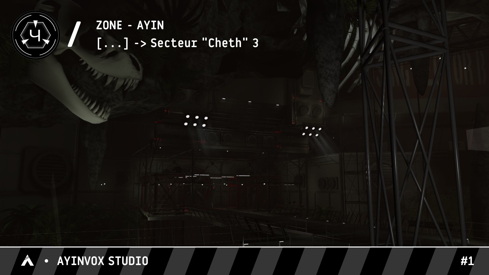
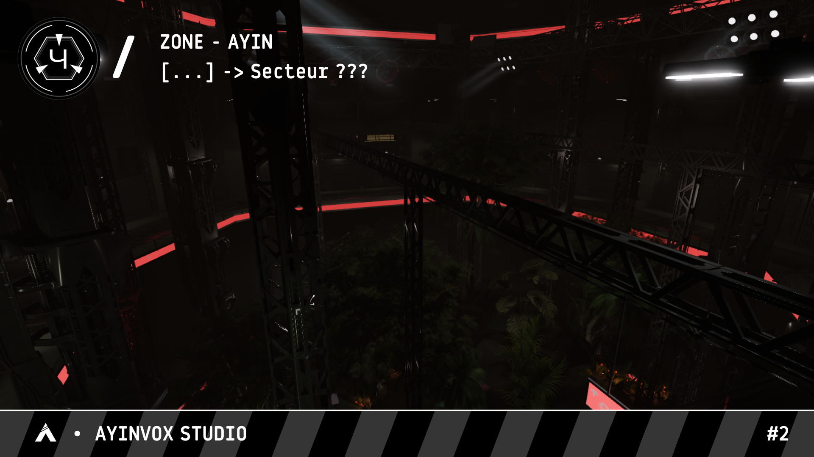

Fondation SCP
Sécuriser. Contenir. Protéger.
Base de données officielle du Site-53. Consultez les dossiers d'objets anomaux, les protocoles de confinement et la structure du personnel autorisé.
§ 01 — À propos
Une institution vouée
à l'inexpliqué
La Fondation SCP est une organisation clandestine mondiale qui opère dans l'ombre des gouvernements pour localiser, confiner et étudier les entités ou phénomènes anormaux violant les lois de la nature. Sous la supervision du Conseil O5, notre mission est de Sécuriser ces menaces, de les Contenir au sein d'installations ultra-sécurisées comme la Zone-Ayin, et de Protéger l'humanité en préservant le secret absolu sur l'existence du surnaturel. Nous mourons dans l'ombre pour que le reste du monde puisse vivre dans la lumière.
Cette base de données recense les dossiers déclassifiés du site : objets sous contrôle, incidents documentés et structure du personnel. L'accès à certains contenus est conditionné à un niveau d'habilitation suffisant.
187
Objets répertoriés
64
Personnel actif
1922
Date de Genèse
§ 02 — Installation
Aperçu de la Zone-Ayin


§ 03 — Accès